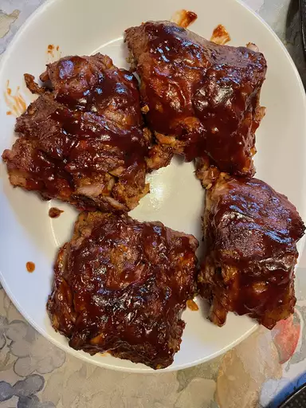

CrockPot Baby Back Ribs!

A tasty and easy recipe
- Prep time: 10 minutes
- Cook time: 4 hours 15 minutes
Ingredients
- 3 pounds baby back ribs, trimmed
- salt and ground black pepper, to taste
- 1/2 cup water
- 1/2 onion, sliced
- 1 clove garlic, minced
- 1 (18 oz) bottle barbeque sauce
Steps
- Season ribs with salt and pepper. Or use your own seasonings
- Pour 1/2 cup of water into the slow cooker and add the ribs. Scatter onion and garlic on top. Cover and cook on Low for 8 hours or High for 4
- When the ribs are almost finished, preheat the oven to 375 degrees F(190 degrees C)
- Transfer ribs from the slow cooker to a baking sheet. Discard onion and garlic. Coat ribs with barbeque sauce.
- Bake ribs in oven until sauce starts to caramelize, 10 to 15 minutes